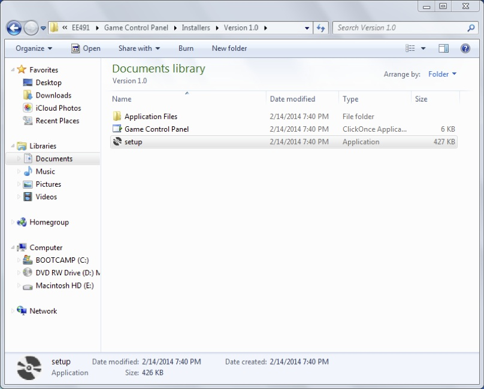
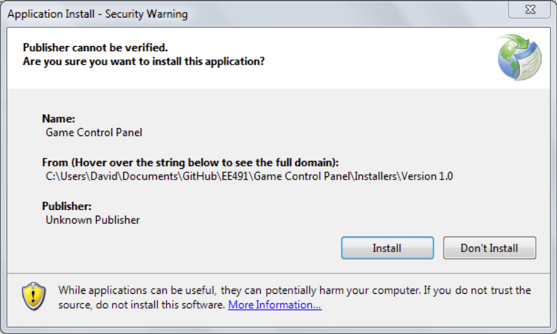
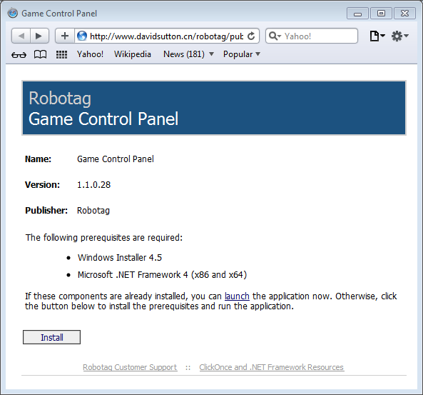
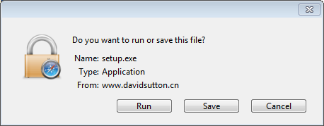
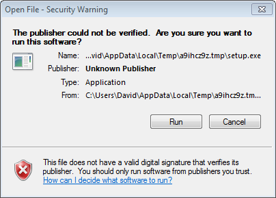

Setup Required for User (Installation)
The minimum system requirement for this application is that the computer running the application must have Microsoft .NET Framework 4 or greater and have Windows Installer 4.5. This requires 1GHz Processor, 512MB RAM, 850MB Disk Space, and an operating system of Windows XP (not compatible with Windows XP Tablet, Media, or Starter edition), Windows Vista, Windows 7 or Windows 8. For more system requirements visit .Net Framework System Requirements.
Installing from a USB Drive
If your computer does not already have .NET Framework 4 or Windows Installer 4.5 additional steps may be required to download and install these components. Just follow the on screen instructions to download and install these components. If these components are installed your computer will need to be restarted.
- Open the Game Control Panel installer folder

Installation Folder
- Double click the setup icon.
- If a security warning pops up notifying you that this application is from an unknown publisher click Install.

Security Warning
- Application is now ready to use. Click this link to view troubleshooting if the installation does not complete for any reason.
Installing from the Internet
If your computer does not already have .NET Framework 4 or Windows Installer 4.5 additional steps may be required to download and install these components. Just follow the on screen instructions to download and install these components. If these components are installed your computer will need to be restarted.
- Open the Game Control Panel website to download the program. http://www.davidsutton.cn/robotag/publish.htm

Installation Website
- Click on the Install button to download the installer.
- When your web browser asks you to if you would like to run or save the application select Run.

Security Warning
- If a security warning pops up notifying you that the publisher could not be verified click Run

Download Security Warning
- If a security warning pops up notifying you that this application is from an unknown publisher click Install.
Installation Security Warning
- Application is now ready to use. Click this link to view troubleshooting if the insallation does not complete for any reason.
{kind=link}
{kind=link}
{kind=link}
{kind=link}